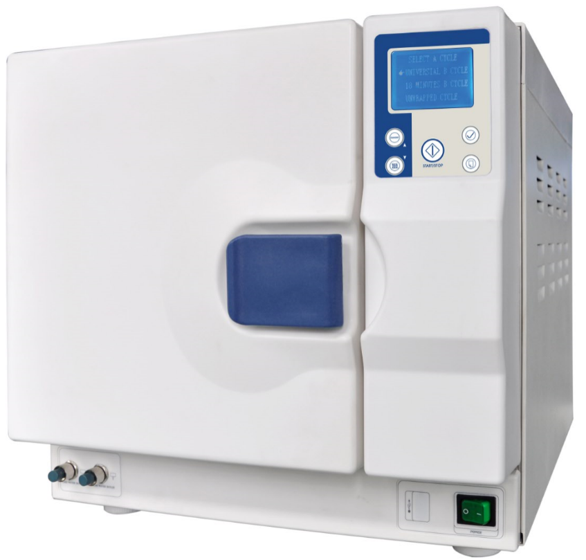

Ing. Jorge Martínez
Equipos médicos y de lavandería industrial a menor precio y con garantía!
Tag
Quienes Somos
Productos
Servicios
Ventajas
Contacto
Esterilizador de vacío de pulso para mesa
Home
Atrás
Esterilizador de vacío de pulso para mesa
AAL-22L-B

X
Esterilizador de vacío de pulso para mesa AAL-22L-B
Voltaje: CA 220V ± 10%
Frecuencia: 50 / 60Hz
Potencia Máxima: 1800VA
Espacio Físico: 22L
Clase: estándar europeo de clase B
Temperatura de esterilización: 121℃，134℃
Esterilización especial: aniquilación actica de HV, VHB, EEB y esporas
Procedimiento en seco: fuerte secado al vacío, la humedad residual <0.2%
Pantalla: LCD, varios idiomas
Prueba: Bowie & Dick, fugas
Seguridad: válvula de seguridad, control automático
Registro de esterilización: hay una microimpresora opcional y un conector USB estándar opcional para el registro de esterilización
Sistema de suministro de agua: dos depósitos abiertos (3.5L de agua dulce y depósitos de aguas residuales de 5 litros), fácil de esterilizar y limpiar
Detección de la calidad del agua: detecta si la calidad del agua cumple con el requisito
Procedimiento de limpieza: limpieza automática dentro de la tubería y generador de vapor
Contenedores de instrumentos: 5 niveles con 3 bandejas
Tamaño de la cámara: 249 mm * 450 mm / 249 mm * 355 mm
Peso neto: 50 kg / 47 kg